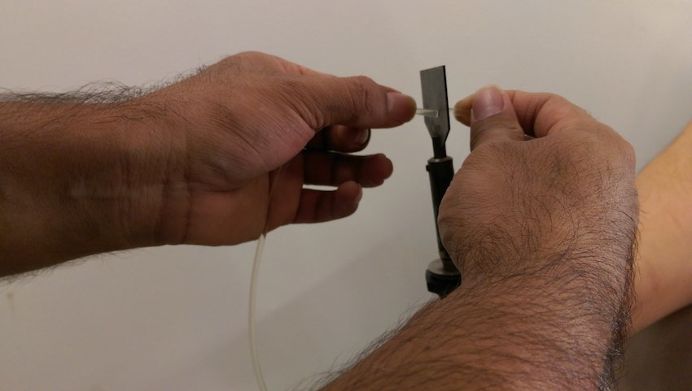
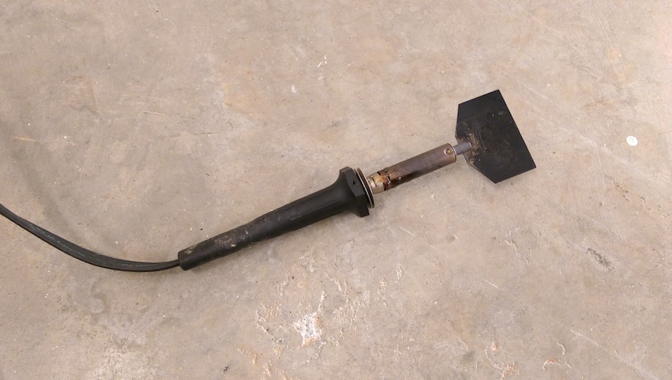
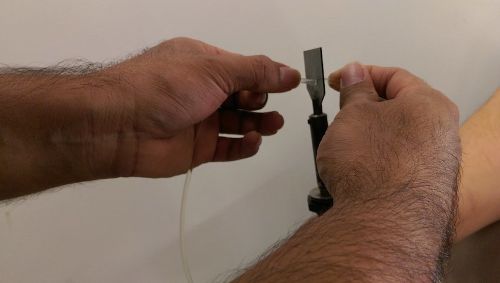
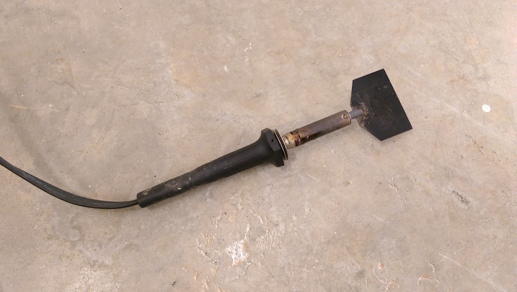

We sell Polycord! Poly cord in stock
Polycord is commonly referred to as poly cord, urethane cord or polyurethane cord. It is the standard material in producing polyurethane belts/ polyurethane orings. Polycord (Poly cord) is the gold standard for conveyor belts. Lineshaft o rings belts, roller to roller o ring belts, and divert o ring belts can all be made from polycord (poly cord). The polycord (poly cord) is cut to the correct length and then welded together using a welding tool.
Polycord (poly cord) is extruded cord. It comes on rolls and we sell it by the foot.
Polycord (poly cord) is available in different durometer ratings. The durometer rating measures the stiffness of the polycord (poly cord). The different durometers for polycord (poly cord) range from 60A to 100A. The most commonly used is the 83A. If you are unsure of the durometer rating you require, we can provide you with some free samples.
Polycord (poly cord) also varies in thickness which is known as its diameter. The most common diameters include 1/8”, 3/16”, ¼”, 5/16” and 3/8”. Other diameters are available upon request.
Polycord (poly cord) is available in a standard clear, a rough textured green, high tension, and orange. Also, the standard clear can be dyed to different colors.
Orange polycord (poly cord) is most common used for divert applications when moving boxes from one conveyor to the next. It is available in an 85A durometer.
Rough textured green polyord (poly cord) is used for light weight handling. It is not intended to be used with heavy items. The rough surface provides less friction. It is a great solution if you are having accumulation problems. It is available in a durometer rating of 88A and 90A.
The high tension polycord (poly cord) is for a longer life span and is color coded by the amount of maximum weight. The colors include blue, red and green.
There are several pros and cons to buying polycord or poly cord instead of the polyurethane belts already welded together. The pros are you do not have to break the machine apart to put the lineshaft belts, roller to roller belts, or diverter belts on. Polycord or poly cord is also significantly less expensive by the foot. This minimizes some of the mechanical work, but it does not necessarily lower your down time. The cons are you have to cut the polycord or poly cord to spec, any bit too long or too short can cause problems. Welding the polycord or poly cord together requires using one of our welding tools. This is a high temperature welding knife that requires steady hands. Once the cord is heated it is then butted together, the excess is trimmed off without cutting off too little or too much. The biggest con is downtime. Welding your own poly cord can take a significant amount of time causing a lot of down time.
Check list for ordering Polycord or poly cord from us:
- Number of feet needed
- Diameter of cord
- Durometer or stiffness of cord- if unknown order 83A
- Color of cord- most common is clear
- Welding tools- do you have them
Our Welding tool is a 40-watt wand that can weld round polyurethane ranging from 1/16” to ½” thickness. We also sell it in a kit which includes pliers, a cord cutter, a trim knife and trimming clippers.
 


